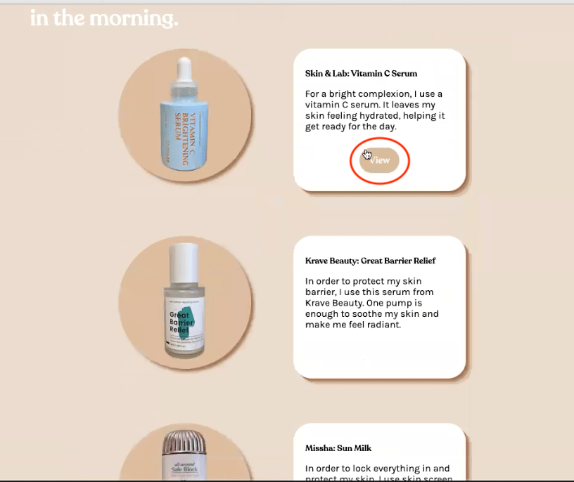
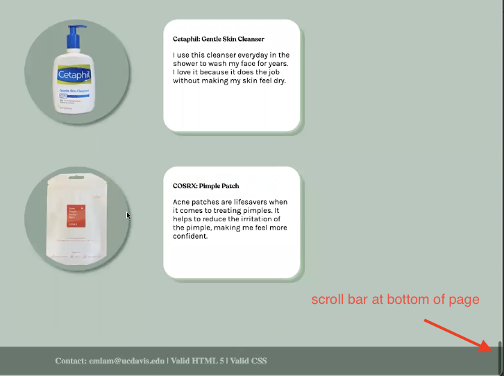

One thing that was pointed out early in the user tests was that one user, Mindy, mentioned that the language that was being used in the product descriptions, as the word “view” seemed a little ambiguous. She mentioned that she didn’t know what to expect when she clicked on that button, as she thought it would be another image of the product and not a link to purchase the product. As I was observing, I noticed in Grace’s test as well that she seemed rather surprised at the fact that the button also led to where to buy the product. She also clicked through multiple product links as well, which led me to believe that the addition of those links help to spark curiosity about the products on my page.
I was also given some helpful feedback in how to improve the product images overall to make them feel more engaging. One insightful thing that another user, VIvian, had mentioned was that there seemed to be a disconnect between the large section images and the product images because the product images seem a lot more staged and less dynamic. Mindy had mentioned to perhaps include a more graphical background in order to make the image stand out more. What I thought was interesting was that two out of the three users gave feedback on how to make the images more engaging, but the last user, Grace, had mentioned that perhaps too much going on would be a visual overload. She mentioned that she thought there was already a nice balance in what was going on.
The last significant finding I noticed was the amount of scrolling that the user did in order to explore my page. The navigation bar does help, as each navigation element scrolls to a specific section of the page when clicked, but only to a certain extent. In order to go back up to the navigation bar, or get to a specific section within the page, the user must scroll all the way back up. And because there are quite a few products in each section, the process of scrolling through to get to a particular section could be a little annoying.
During these rounds of user testing, I was able to understand how different users were interacting with the site, which revealed areas of improvement to improve the user experience. In order to iterate based on feedback, I would address the problems by doing the following:
Instead of using just the word “view” on the button that leads the user to where to buy the product, I would instead make it clearer by saying “buy” or “view product.” By being more specific, this would make it a lot clearer to the user of where exactly the link is taking them to help them determine if it would be something they would be interested in looking further into.
To make the images more engaging, I could either retake the images of the products, or create a nicer background for the products through creating some graphical elements that fit with the brand of my site. If I were to retake the images, I would make sure the product is on a nicer background -- one which fits better with the large section images and doesn’t seem as out of place.
In order to reduce the amount of scrolling a user has to do throughout the page, I would create a fixed button on the button right of the page that would scroll back up to the top of the page. When the user arrives back at the navigation bar, they can more easily navigate to a specific section without having to scroll all over the place.